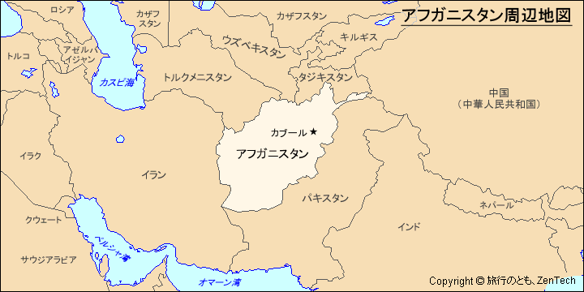
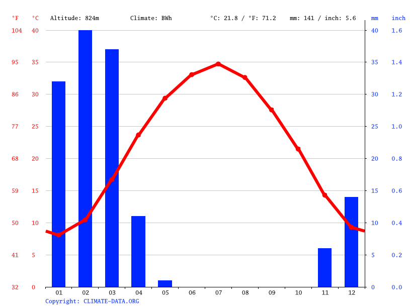
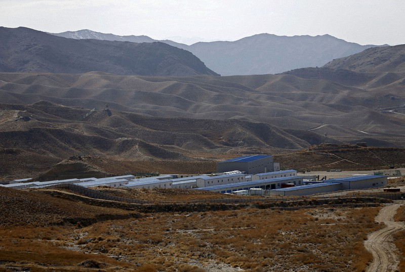
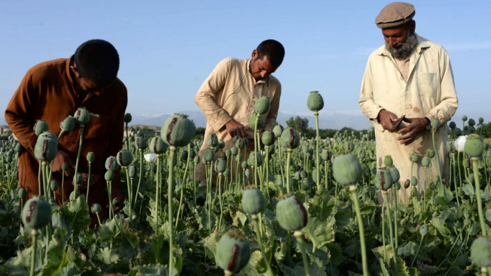

中東に位置し、パキスタンやイラン、トルクメニスタン、ウズベキスタン、タジキスタン、中国と国境を接している内陸国です。
もともとの国土はパキスタン北部まで広がっていましたが、平野部はイギリスにより引きちぎられ、現在は山岳地帯が大部分を占めています。北部や南西部にはわずかに平野部があり、最も標高の高い地点は、海抜7,485メートルのノシャック山です。国土の大半は乾燥していて、真水の入手できる場所は限られていますが、水系は、アム・ダリア水系、ハリ・ルー水系、ヘルマンド・アルガンダ水系の四つに大別できます。ヒンドゥー・クシュの中心山系から国土を潤す三つの川が流れていて、一つは東流してインダス川に合流するカーブル川、もう一つは南流してハムーン沼沢地に消えるヘルマンド・アルカンダブ川、さらにもう一つは西流してカラクム砂漠に消えるハリ・ルード川です。
アフガニスタンの気候はとても乾燥していて、季節的です。ただし、場所によって標高が異なるので、同じ季節であっても地域によってかなり気温の差があります。
古くからアフガニスタンには世界最大規模の各種金属、希少金属、貴金属、宝石を含有する豊富な鉱脈が数多く存在することが知られています。 有機鉱物資源では北部の天然ガスが主力で、石炭も採掘されています。金属鉱物資源ではクロムがあり、このほか岩塩も採取されています。
アフガニスタンは中央アジア、南アジア、西アジアの交差点に位置していて、その文化は、言語、料理、クラシック音楽などに見られるトルコ・ペルシア文化、インド・ペルシャ文化の要素と強い結び付きがあります。
アフガニスタンは地球上で最も貧しい国の一つで、アフガニスタンにとって最も貴重な輸出品としてアヘンが多く輸出されています。
アフガニスタンでは今でも紛争が続いており、アフガニスタンの紛争の解決が平和な世界を創り上げるスタートになると思います。